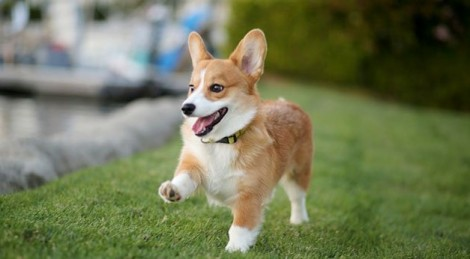
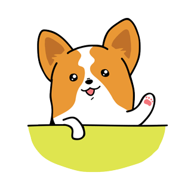

Velsas korgijs ir sena mazo ganu suņu šķirne, kas cēlusies senajā ķeltu reģionā Velsā aptuveni 10. gadsimtā. Nelielais augums un lieliskā sportiskā forma sunīšiem ļāva veikli izvairīties no ragiem un spērieniem, veicot ganu pienākumus. Viņu specializācija bija aitu, ragaino liellopu un Velsas poniju ganīšana.
Uz cilvēku orientētais, sabiedriskais un draudzīgais kardigans varētu kļūt par lielisku kompanjonu. Šīs šķirnes suņi ir piemēroti dažādiem cilvēkiem. Tie labi jutīsies sportiskā, aktīvā ģimenē, ies garās pastaigās un skries pa mežu vai arī blakus savam saimniekam omulīgi gulēs uz dīvāna. Šķirnes pazinēji ir pārliecināti, ka Velsas korgijs kardigans ir arī brīnišķīgs bērnu draugs, kas noteikti atradīs vietu kuplā ģimenē. To pierāda arī amerikāņu vlogeris Rians, kurš stāsta par savu korgiju Great Gatsby īsos video, kuri atrodamišeit.
Pembroks var būt ruds, melns, smilšu krāsas vai trīskrāsu, ar vai bez baltiem laukumiem uz kājām, krūtīm, kakla, purniņa, vēdera. Kā šaura svītra balts laukums ir pieļaujams uz galvas. Trīskrāsu suņi var būt ar melnām vai rudām galvām.
